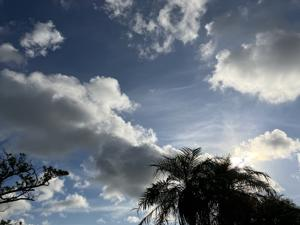
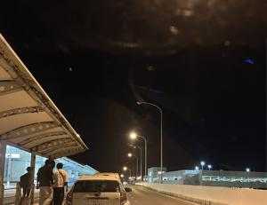

うるがいの話 ある日
最新: 未明の空港【うるがいの話 ある日】とは 一日だけのプログです
『うるがいの話』の最新一日だけのプログで、通信料が少なく経済的だ。カニの画像をクリックすると全ての日付が載る『うるがいの話』サイトを表示します
|
|
【うるがいの話】 うるがい(ｳﾙｶﾞｲ urugai)とは、『もずくがに』の名前でとても大きくなります。 |
|---|---|
|
|
【カミマヤーの話】 猫のことを方言でマヤーといいます。カミマヤー（kamimayaa）とは、神の猫のことです。 |
|
【たながぁの音楽】 たながぁ（ﾀﾅｶﾞｰ tanagaa）とは手長えびのことで、何種類かあり大きいのは車 エビぐらいになります。 |

|
【ぶながぁの話】 ぶながぁ(ﾌﾞﾅｶﾞｰ bunagaa)とは、赤い髪の毛、赤い身体、そして身長は１ｍ２０ｃｍ ぐらい、川の蟹を食べているの目撃された。場所は沖縄県国頭郡大宜味村のと ある村僕の隣近所に住んでいる爺さんから、聞いた話です。 |
|
|
【ギーマの話】 ギーマ(giima)とは、山原の里山に咲くスズランに似た、 花を付けます。実は食べられます、 気が付くと口の周りが紫になっています。 |
2024年08月23日 (金）未明の空港
15:34

ジョギング中、下腹部に嫌な感じの痛みがする、ん？。夜、痛みが襲う。座
薬を２０時前に投入、コドモの送迎大丈夫だろうか？。痛みは、２１時の治
まらなってきた。朝４時前に起床、「油みそ」を入れ、海苔で巻いたおにぎ
りを３個つくる。コドモをアパートに迎える、車に乗ったとき忘れ物ないよ
ねと言うと、財布忘れたと取りにいった。まだ、眠気があるようだ。５時過
ぎに空港で降ろす、未明にもかからず出発ロビーは混んでいた。

痛みは、昨日でとうげを越えたようで、排石をまつ。１１時ごろ悪は去る。
前回から、ひと月サイクルが早い。２リットルの水は、まじめに実行してい
る。まだ、石は３つ残留している（先月の診察によると）、トホホ。
あ！、京都国際が甲子園大会優勝した、京都に住んでいるとき甲子園への京
都大会を１試合を同部屋の和田さんと観戦したこともあり、応援した（パチ
パチ）。
１６時２９分 ビットコインの総資産 ￥２５、７６４（↑１２９）